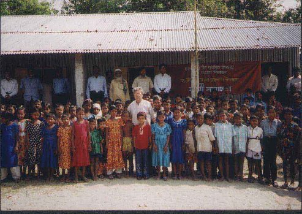

Returning
from Roumari: A brief Reporting -2

Progress of
Khedaimari School Project
In
my
previous report after returning from Roumari I briefly stated that in
Khedaimari village, a char island in Brahmaputra-Jamuna river with the
active cooperation MM a lower secondary school (Class VI-VIII) is being set
up. On that occasion on behalf of MM I handed over a sum of Tk. 100,000/-
(one hundred thousand taka) to initiate the work (29th October,
2004). Since then I have been monitoring the progress of the project.
I arrived Roumari on 7th April evening again
by a microbus after a long journey of not less ten hours and met the local
elites in a meeting in the evening. We exchanged views over many things but
mainly on education with special reference to problems being faced by rural
institutions. Next morning we proceeded to char Khedaimari to look for
ourselves the condition of the school project MM initiated. We reached there
after crossing a river, branch of Brahmaputra in about one hour’s journey
on motorbikes. The present status of the project is described below in
brief.
- A school committee has been constituted as per
rules. A popular local man Advocate Amzad Hosain, a practicing lawyer in
Kurigram district court, heads the committee. Politically he is a
liberal democrat believing in secularism and pluralism, as I understand
from his conversation with me. Head master is the member secretary.
- 4 teachers have been appointed including the head
master.
- The number of students is nearly 200 out of which
more than 40% are female. This is a very healthy sign.
- The school has officially started functioning from
January 1, 2005. In the mean while the educational authority of the
government at various levels has visited the school quite a few times.
The authority is very much impressed as reported by the President, Head
master and other members of the committee. It is hoped that the school
would get government recognition within a year or so. In the meanwhile
school board authority has given official sanction to continue academic
programme of the school. This is very encouraging especially when we
take into account of the background of locality- a remote village in the
bed of river Brahmaputra, isolated from outside world and civilization.
A cultural function
organized:
The local people and the school children were
overwhelmed with joy and surprise because of our visit. The local people
could not imagine that persons like us, in their eyes luminaries of our
society would come to them to help establish a school. A grand cultural
function was organized on the occasion of our visit. Personally I felt
embarrassed but elevated. The function includes:
- a musical soirée performed by the school children.
- a debate competition participated by the students.
- Lathi khela – a grand display of our folk
tradition, participated by not less than 50 local lathials. The
performance of lathi khela displaying variety of techniques was led by a
octagerian old man. After the show I personally talked to him. He once
again invited me to come to Khedaimari when he would again display the
performance for at least 2 hours. I politely accepted his invitation.
- Performance of baul sangit by the real folk bouls.
A truly boul-sangit was presented in its true perspectives. It is simply
charming.
- Jari gan, another institution of our folk culture.
Some portion of the epic of Karbala was presented after colorful
introduction of seeking blessings from Allah, the prophet, and various
gods and goddesses of Hindu mythology including Himalayas.
- Finally, a kabi-gan (a duet song between two
poets) was presented for half an hour. Theme of the duet was present
chaotic cindition obtaining in our educational world. One singer
supporting the stand of the government measures, the other one
criticizing it and government’s utter failure. Needless to say, the
government-supporting singer ultimately accepted the defeat.
The function began with a mass drill displayed by the
students followed by an opening song. No recitation from holy Koran. A half
an hour speech giving ceremony was held in which a few local elites spoke. I
handed over a sum of Tk 50,000/- (Tk fifty thousand) on behalf of MM, which
was applauded by the audience.
The function, which continued for over 4 hours, was
participated by almost entire village population in which female
participants outnumbered their male counter parts. And all came without any
‘borkha’, a rare scene is to be found in Jamat dominated Bangladesh. I spent
almost whole day with the villagers participating in their joyous mood.
I returned from Khediamari to Roumari at about 9 p.m.
dead tired.
Ajoy Roy.